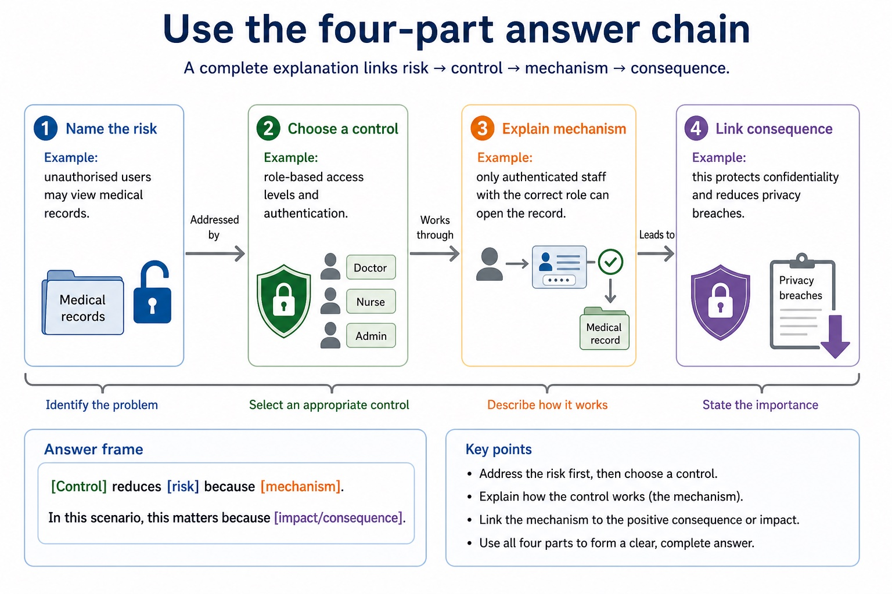
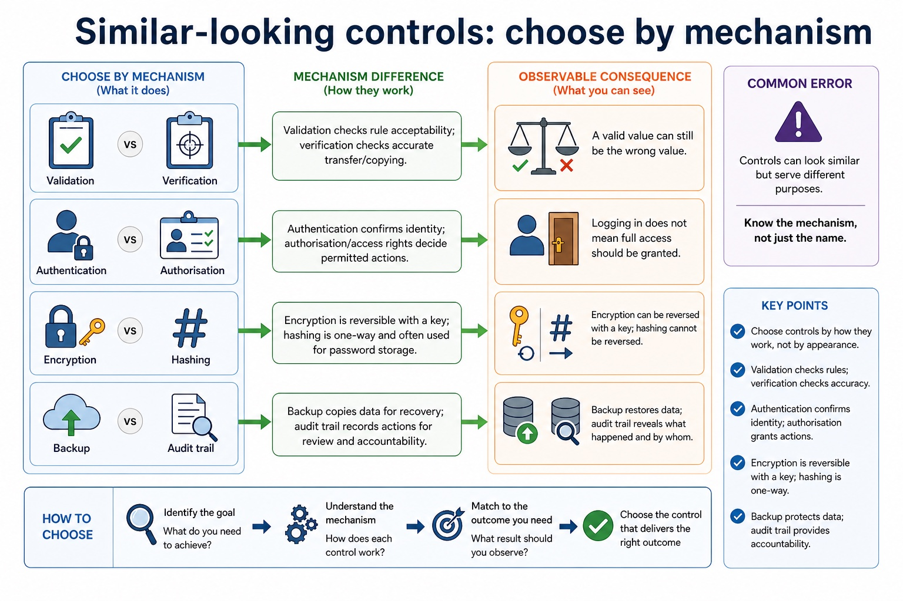
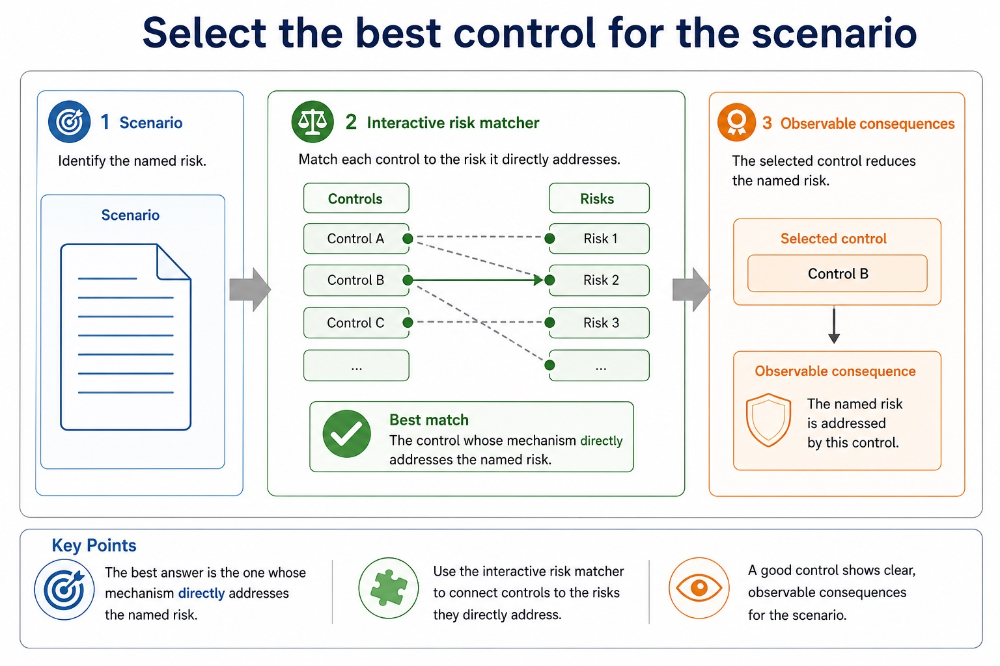
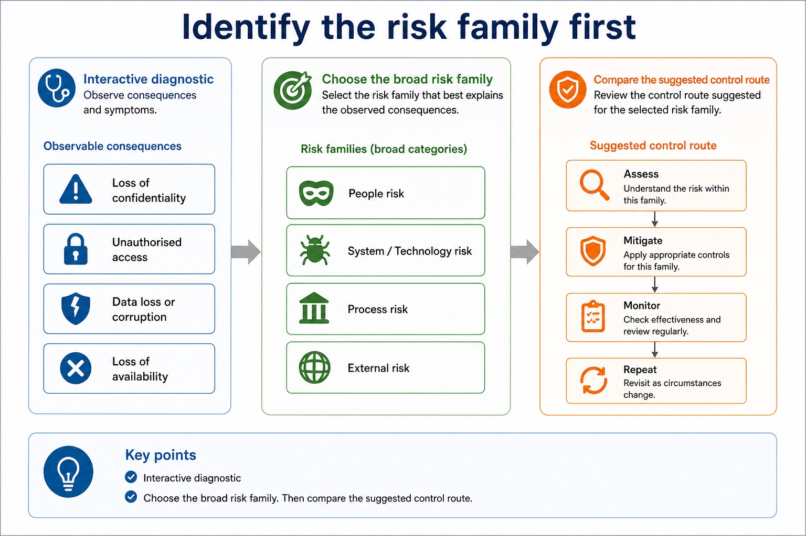

The right control depends on the risk, not on the fanciest keyword.
This review lesson connects Section 6 topics: threats, vulnerabilities, confidentiality,
integrity, availability, privacy, authentication, encryption, backup, disaster recovery
and audit trails. The exam skill is to diagnose the problem first, then choose and justify
a proportionate control.
Classifyrisk type: access, loss, corruption, disclosure or disruption
Matcheach risk to a suitable control and clear mechanism
Correctvague answers into mark-worthy scenario explanations
AssetThreatVulnerabilityImpactControlConsequence
"Use encryption" is not a personality. Explain what it protects and why.
Why this matters
Cambridge-style marks often reward the link between a control and the specific scenario, not a memorised list.
Common trap
Students often prescribe encryption for everything. Encryption protects confidentiality; it does not prove identity, restore data or stop weak behaviour.
Warm-up hook
A school loses coursework because a shared drive failed. Which control best addresses the main risk?
If the answer is "stronger passwords", the files remain impressively inaccessible to everyone.
Choose one. Identify the risk before admiring the control.
Knowledge point 1
Section 6 review map: risk families and likely controls
Risk family
Typical problem
Useful controls
Unauthorised access
A user enters a system or data they should not access.
1. Name the riskExample: unauthorised users may view medical records.2. Choose a controlExample: role-based access levels and authentication.3. Explain mechanismExample: only authenticated staff with the correct role can open the record.4. Link consequenceExample: this protects confidentiality and reduces privacy breaches.
Answer frame:[Control] reduces [risk] because [mechanism]. In this scenario, this matters because [impact/consequence].
Use the four-part answer chain

Use the four-part answer chain: source-grounded visual explanation.
Lesson fact: 1. Name the risk Example: unauthorised users may view medical records.
Lesson fact: 2. Choose a control Example: role-based access levels and authentication.
Lesson fact: 3. Explain mechanism Example: only authenticated staff with the correct role can open the record.
Lesson fact: 4. Link consequence Example: this protects confidentiality and reduces privacy breaches.
Lesson fact: Answer frame:
Lesson fact: [Control] reduces [risk] because [mechanism]. In this scenario, this matters because [impact/consequence].
Knowledge point 3
Controls have different jobs
AuthenticationChecks identity before access. It does not decide every permission by itself.Access rightsLimit what an authenticated user can read, edit, delete or approve.EncryptionMakes data unreadable without the key, protecting confidentiality.ValidationChecks input follows rules such as type, range, length or format.VerificationChecks data has been copied or entered accurately, often by comparison.BackupProvides recoverable copies after deletion, corruption or hardware failure.Disaster recoveryPlans how systems and services are restored after a major incident.Audit trailRecords actions for investigation, accountability and evidence.
Controls have different jobs
Controls have different jobs: source-grounded visual explanation.
Lesson fact: Authentication Checks identity before access. It does not decide every permission by itself.
Lesson fact: Access rights Limit what an authenticated user can read, edit, delete or approve.
Lesson fact: Encryption Makes data unreadable without the key, protecting confidentiality.
Lesson fact: Validation Checks input follows rules such as type, range, length or format.
Lesson fact: Verification Checks data has been copied or entered accurately, often by comparison.
Lesson fact: Backup Provides recoverable copies after deletion, corruption or hardware failure.
Lesson fact: Disaster recovery Plans how systems and services are restored after a major incident.
Lesson fact: Audit trail Records actions for investigation, accountability and evidence.
Knowledge point 4
Similar-looking controls: choose by mechanism
Pair
Difference
Exam trap
Validation vs verification
Validation checks rule acceptability; verification checks accurate transfer/copying.
A valid value can still be the wrong value.
Authentication vs authorisation
Authentication confirms identity; authorisation/access rights decide permitted actions.
Logging in does not mean full access should be granted.
Encryption vs hashing
Encryption is reversible with a key; hashing is one-way and often used for password storage.
Do not say hashed data can be decrypted.
Backup vs audit trail
Backup restores data; audit trail explains what happened.
An audit log is not a copy of the lost file.
Similar-looking controls: choose by mechanism

Similar-looking controls: choose by mechanism: source-grounded visual explanation.
Lesson fact: Difference
Lesson fact: Exam trap
Lesson fact: Validation vs verification
Lesson fact: Validation checks rule acceptability; verification checks accurate transfer/copying.
Lesson fact: A valid value can still be the wrong value.
Lesson fact: Authentication vs authorisation
Lesson fact: Authentication confirms identity; authorisation/access rights decide permitted actions.
Lesson fact: Logging in does not mean full access should be granted.
Lesson fact: Encryption vs hashing
Lesson fact: Encryption is reversible with a key; hashing is one-way and often used for password storage.
Lesson fact: Do not say hashed data can be decrypted.
Lesson fact: Backup vs audit trail
Interactive risk matcher
Select the best control for the scenario
The best answer is the one whose mechanism directly addresses the named risk.
Select the best control for the scenario

Select the best control for the scenario: source-grounded visual explanation.
Lesson fact: Interactive risk matcher
Lesson fact: The best answer is the one whose mechanism directly addresses the named risk.
Lesson fact: Scenario
Interactive diagnostic
Identify the risk family first
Choose the broad risk family. Then compare the suggested control route.
Identify the risk family first

Identify the risk family first: source-grounded visual explanation.
Lesson fact: Interactive diagnostic
Lesson fact: Choose the broad risk family. Then compare the suggested control route.
Worked examples
Four model answers that turn labels into marks
Practice with instant checking
Use precise vocabulary, then expand into full explanations
Mistake debugging
Fix answers that sound secure but do not earn enough marks
Exam-style questions
Cambridge-style Section 6 review questions with expandable MS
Attempt first. Then open the mark scheme and check whether the mechanism and scenario link are present.
Summary
Section 6 review in six exam-ready sentences
Risk firstIdentify what can go wrong before naming a control.
Mechanism earns marksExplain how the control reduces the risk.
Scenario mattersLink the answer to the data, user or organisation given.
Different controlsAuthentication, encryption, validation, backup and audit trail solve different problems.
Do not overclaimNo control removes all risk; describe what it reduces.
Use consequencesConnect to confidentiality, integrity, availability, privacy or accountability.
Homework
Make the review useful, not decorative
Task 1: Risk-control tableCreate a 12-row table with columns: scenario, risk family, suitable control, mechanism, consequence. Use at least six different Section 6 controls.Task 2: Rewrite weak answersRewrite these into mark-worthy answers: "Use encryption", "Make backups", "Use validation", "Use passwords". Each rewrite must include because + scenario consequence.Task 3: Timed exam responseAnswer: "A school stores pupil records online. Discuss security measures that could reduce risks to this data." Write 8-10 marks worth of points using Section 6 vocabulary.